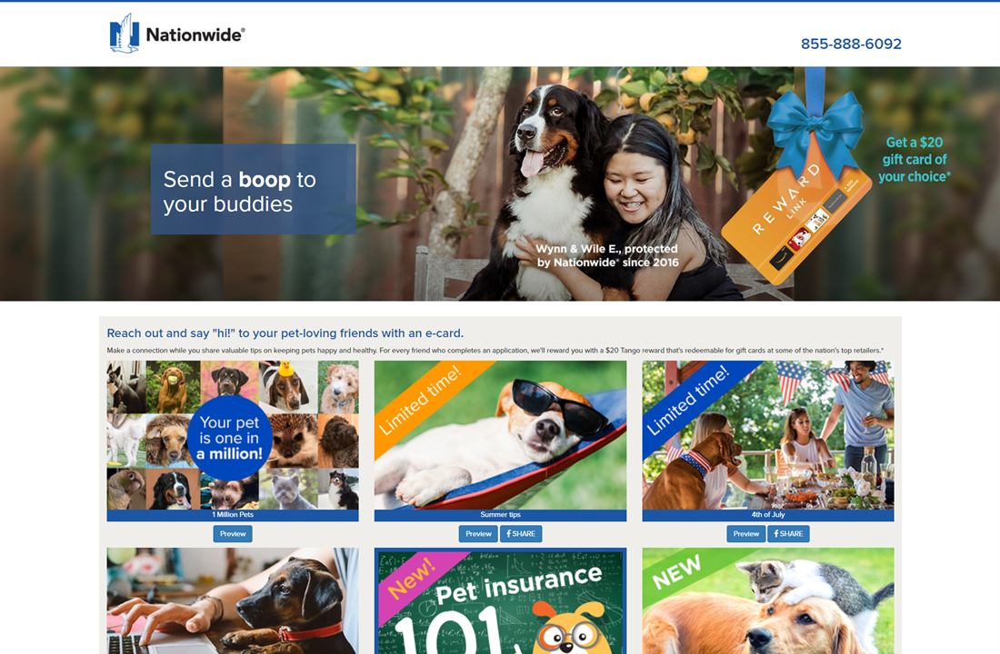
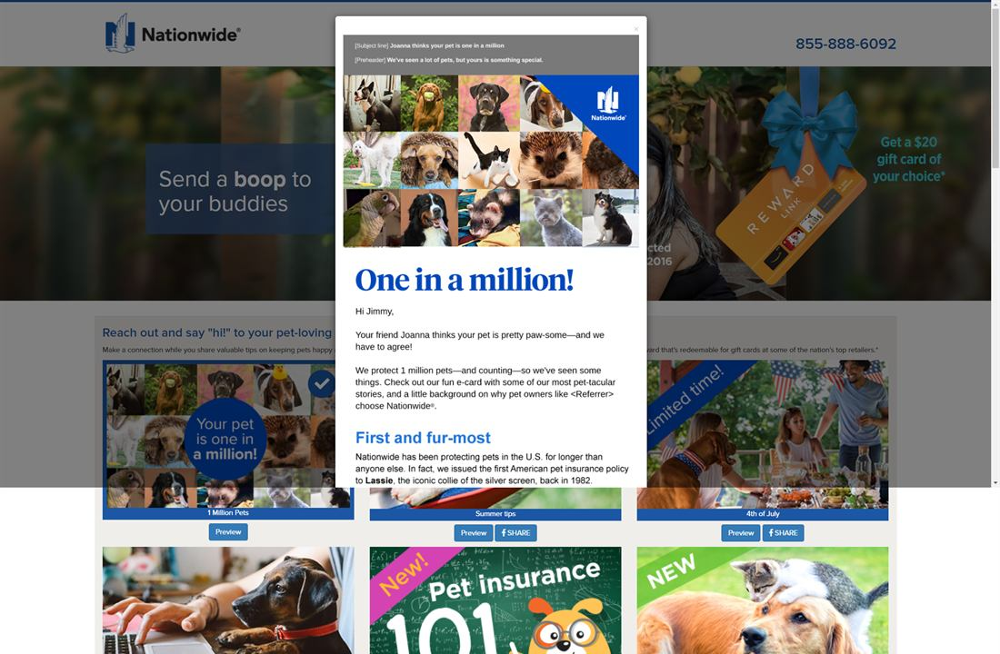
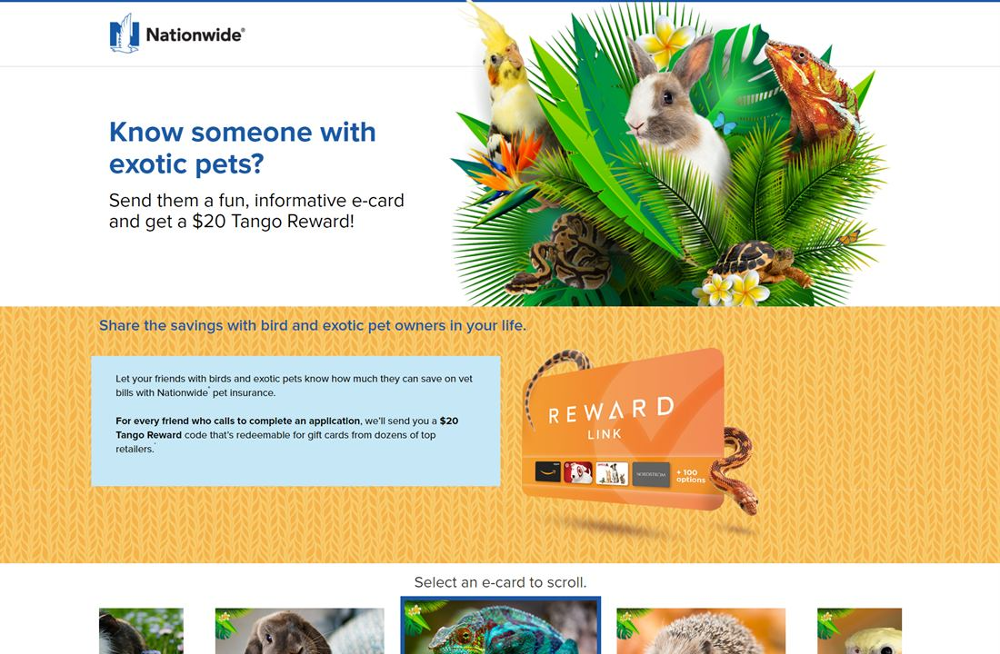

Data Analyst / Marketing Analyst / Growth Analyst
Messy data. Clear decisions.
I am Jimmy Yoon, a hands-on analytics independent contributor with a Computer Science background and 7+ years of experience building reporting workflows, campaign analysis, dashboards, automation, and measurable business insights.
- 7+ yrs
- analytics and marketing execution
- 15%
- engagement lift through testing
- 30%
- faster reporting workflows
Campaign performance
+15%
Churn reduction
-10%
Targeted reach
+20%
About
Independent contributor for analytics-heavy marketing and product teams.
I work close to the data and the execution. My background sits at the intersection of SQL-backed workflows, web and email development, Google Analytics, Salesforce Marketing Cloud reporting, customer segmentation, and campaign testing.
I translate business questions into KPIs, reports, and recommendations: what to measure, where the data lives, how to QA it, and what teams should do next. The work I want is hands-on analyst work: dashboards, funnel analysis, lifecycle reporting, automation, and practical insight delivery.
Skills
Analytics, reporting, and technical execution.
Marketing Analytics
Dashboards & Reporting
Tools & Platforms
Programming / Automation
Experience
Resume experience reframed around analyst IC impact.
Marketing Data Analyst / Email Marketing Manager
Built lifecycle campaign analysis and reporting in Salesforce Marketing Cloud, connecting segmentation, dynamic content, A/B tests, and multivariate tests to engagement and retention outcomes.
- Raised engagement 15% and reduced churn 10% by analyzing campaign performance and optimizing journeys.
- Defined audience, engagement, churn, and journey-performance metrics with Product, Data, and Marketing teams.
- Used Google Analytics and SFMC reporting to identify targeting, content, send-timing, and retention opportunities.
- Built responsive HTML/CSS and AMPscript assets with QA, accessibility, personalization, and deliverability controls.
SaaS Developer / Data Automation Analyst
Developed internal analytics-enabled web applications and SQL-backed workflows to support marketing automation, reporting, and personalized campaign execution.
- Built ReactJS, ASP.NET, SQL, and Azure applications for marketing automation and stakeholder reporting.
- Created REST API integrations and SQL-backed workflows that increased targeted reach by 20%.
- Delivered analytics-enabled features that improved campaign performance and user engagement by 17%.
- Maintained data flows and reporting logic across customer data, campaign systems, and internal dashboards.
Web Developer / Reporting Automation Analyst
Automated marketing workflows and shipped responsive web assets, landing pages, and email templates while giving stakeholders faster access to performance trends.
- Improved campaign reporting speed by 30% through automated workflows and analytics integrations.
- Used .NET Core, JavaScript, and SQL Server to support conversion-focused pages and reporting needs.
- Partnered with design, marketing, and business stakeholders on product-led growth initiatives.
Selected Work
Case studies focused on business questions, reporting, and outcomes.

Lifecycle campaign analytics
Campaign testing and retention optimization
Built reporting workflows to track Salesforce Marketing Cloud journey performance, evaluate tests, and identify optimization opportunities for lifecycle campaigns.
- Problem
- Improve engagement, targeting, and retention across customer journeys.
- Tools
- SFMC, Google Analytics, AMPscript, HTML/CSS, A/B testing
- Outcome
- 15% engagement lift and 10% churn reduction.

Reporting automation
Internal analytics apps and data-driven campaign workflows
Developed SQL-backed workflows and REST API integrations that connected customer data, marketing systems, and stakeholder reporting needs.
- Problem
- Make campaign data usable for personalization, reporting, and stakeholder decisions.
- Tools
- ReactJS, ASP.NET, SQL, Azure, REST APIs
- Outcome
- 20% increase in targeted reach and 17% user engagement improvement.

E-commerce analytics
Smart PetBrush segmentation and repeat-purchase analysis
Launched and optimized Shopify storefronts, then used segmentation and campaign reporting to measure effectiveness, improve merchandising decisions, and support lifecycle strategy.
- Problem
- Understand what messaging and merchandising actions moved engagement and repeat purchase.
- Tools
- Shopify, customer segmentation, campaign reporting
- Outcome
- 35% customer engagement increase and 12% repeat-purchase lift.
GitHub Work
Technical projects that show API, UI, and practical build skills.
These public repos are not presented as analytics case studies. They are included to show technical range: API integration, data mapping, UI state, and responsive frontend execution.
React / API
GitHub
Ravenous
A React search application that queries the Yelp Fusion API, maps structured business results, and supports searching by term, location, and sort criteria.
- Problem solved: turn external API results into a usable local search experience.
- Key features: controlled search inputs, API fetch flow, structured result cards, and sorting logic.
JavaScript / API
GitHub
Weather Card
A lightweight JavaScript weather interface that reads browser geolocation, requests forecast data, and displays current conditions with unit conversion.
- Problem solved: make location-based API data understandable in a compact UI.
- Key features: geolocation, API request handling, weather icon rendering, and Fahrenheit/Celsius toggle.
JavaScript / UI
GitHub
Image Gallery
A static JavaScript gallery that manages thumbnail selection and main-image display, showing UI state handling without a framework.
- Problem solved: create an interactive browsing pattern from simple DOM data.
- Key features: thumbnail grid, active image state, responsive layout, and clean DOM event handling.
Education
Computer Science foundation with product context.
California State University, Fullerton
B.S. Computer Science, Class of 2017
Product School
Product Management Certification, 2019
Contact
Looking for analyst IC roles where data turns into action.
Best fit: data analyst, marketing analyst, growth analyst, business analyst, lifecycle analytics, or analytics-focused roles that need someone who can define the metric, build the report, QA the workflow, and explain the recommendation.